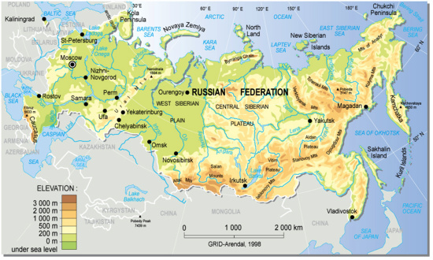
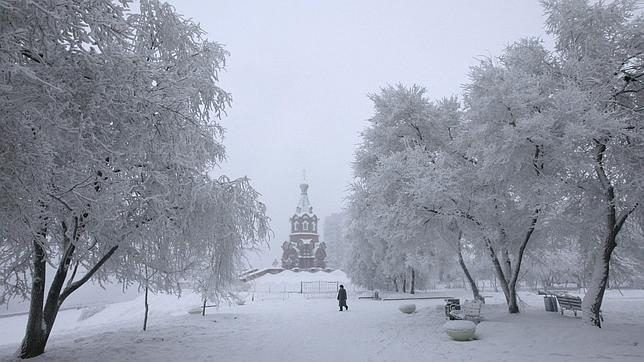
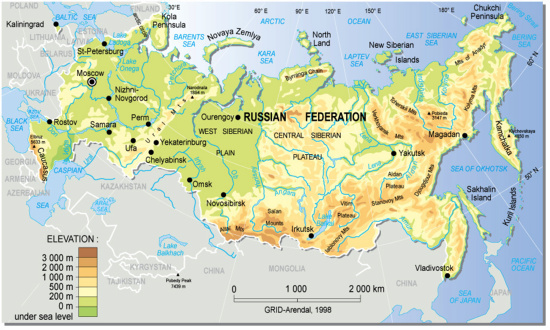
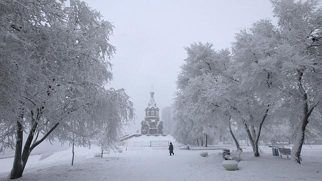
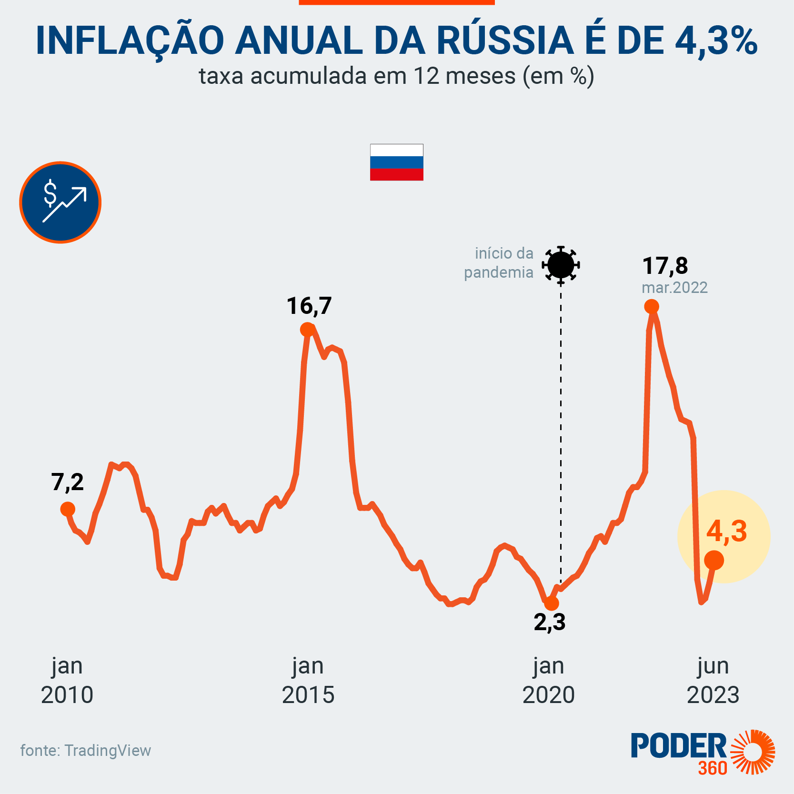
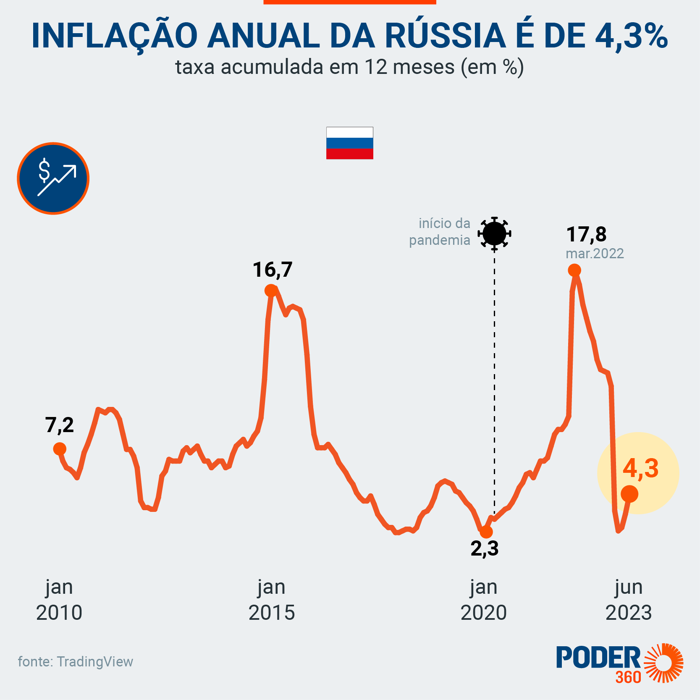

A Rússia é o maior país em extensão territorial do mundo, portanto, possui uma
geografia diversificada. Ela está localizada entre a Ásia e a Europa.
O território russo é
banhado pelos oceanos Pacífico e Glacial Ártico. Além disso, a Rússia é banhada
pelos mares Báltico, Negro e Cáspio.
O território russo faz fronteira com os seguintes países: Noruega, Finlândia,
Estônia, Letônia, Belarus, Ucrânia, Geórgia, Azerbaijão, Cazaquistão,
Mongólia, China e a Coreia do Norte.
Além do território russo unificado, o país
ainda possui uma pequena província que fica localizada no continente europeu,
entre a Lituânia e a Polônia, chamada Kaliningrado.
O relevo da Rússia é formado por grandes áreas de planícies e planaltos .
O Cáucaso e o Urais são as principais formações de relevo de elevada altitude
do território russo. O Monte Elbrus, com cerca de 5.650 metros, é o pico da
Rússia e também de toda a Europa.
Sua rede hidrográfica é formada por um amplo conjunto de rios, com
destaque para o Volga, o Ob, o Lena e o Ienissei. O Lago Baikal, considerado o
mais profundo do mundo, também está localizado no território russo.
Por sua vez, o clima da Rússia é tipicamente temperado, com verões
quentes e invernos muito frios. Já o norte do país é caracterizado pelo clima
polar. A vegetação é composta por formações de florestas temperadas,
estepes e tundras.
Dados gerais sobre a Rússia ↓
Nome oficial: Federação Russa.
Gentílico: russo.
Extensão territorial: 17.098.246 quilômetros quadrados.
Localização: Europa Oriental e Ásia.
Capital: Moscou.
Climas: temperado e polar.
Governo: república federal semipresidencialista.
Idioma: russo.
Religiões: 44,6% — cristianismo ortodoxo russo, 10,7% — islamismo, 8,2% — ateísmo, 36,5% — outras.
População: 145.934.000 habitantes.
Densidade demográfica: 8,9 habitantes/quilômetro quadrado.
Índice de Desenvolvimento Humano (IDH): 0,824 (muito elevado).
Moeda: rublo russo.
Produto Interno Bruto (PIB): US$ 1,7 trilhões.
PIB per capita: US$ 11.584.
Gini: 0,37%.
Fuso horário: UTC+3.
Relações exteriores:
Organização das Nações Unidas (ONU);
Organização Internacional do Comércio (OMC);
Cooperação Econômica Ásia-Pacífico (Apec);
G20.
Divisão administrativa ↓
22 repúblicas:
Adiguésia, Bascortostão, Buriácia, Altai, Daguestão, Inguchétia, Cabárdia-Balcária, Calmúquia,
Carachai-Circássia, Carélia, Komi, Mari El, Mordóvia, Iacútia, Ossétia do Norte-Alânia, Tartaristão, Tuva,
Udmúrtia, Cacássia, Chechénia, Chuváchia, República da Crimeia.
46 províncias (oblast):
Amur, Arcangel, Astracã, Belgorod, Briansk, Vladimir, Volgogrado, Vologda, Voronej,
Ivanovo, Irkutsk, Kaliningrado, Kaluga, Kemerovo, Kirov, Kostroma, Kurgan, Kursk, Leningrado, Lipetsk,
Magadan, Moscovo, Murmansk, Nijni Novgorod, Novgorod, Novosibirsk, Omsk, Oremburgo, Oriol, Penza,
Pskov, Rostov, Riazan, Samara, Saratov, Sacalina, Sverdlovsk, Smolensk, Tambov, Tver, Tomsk, Tula,
Tiumen, Ulianovsk, Tcheliabinsk, Tchita, Iaroslavl.
4 distritos autônomos (okrugs):
Iamália-Nenétsia, Khântia-Mânsia, Nenétsia, Tchukotka.
9 territórios (krays):
Altai, Kamtchatka, Khabarovsk, Krasnodar, Krasnoiarsk, Litoral, Perm, Stavropol,
Transbaicália.
3 cidades federais:
Moscou, São Petersburgo e Sebastopol.
1 província autônoma (oblast autônomo):
Oblast Autônomo Judaico.

 





 
